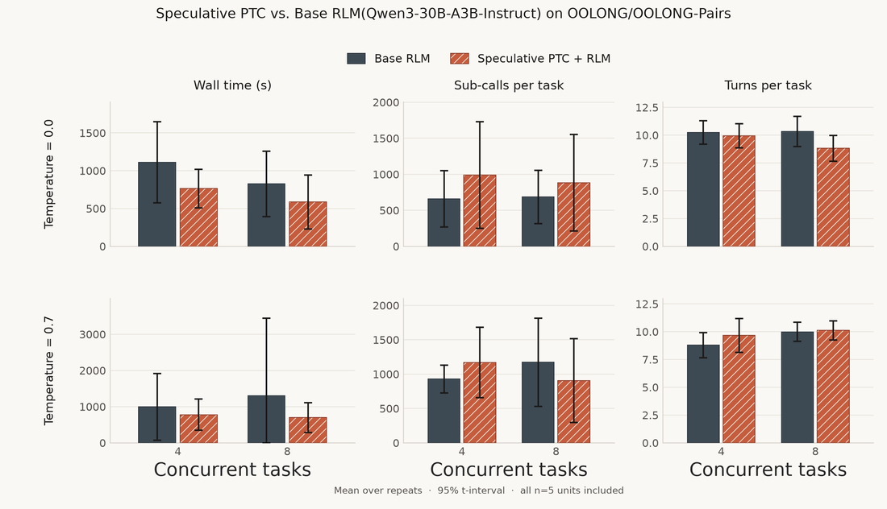

受CPU推测执行和LLM推测解码启发，Alex Zhang提出一个简洁但好用的harness设计技巧：sPTC（speculative programmatic tool calling）。在模型还在流式生成时，就从部分生成的REPL调用里推测并预启动工具调用（尤其是sub-LLM/sub-agent这类高延迟工具），不用等整个生成完成。
主要收益两块：① 把「已生成的工具调用」和token流式生成重叠（省掉原本等整段生成的时间，对爱思考很久的模型尤其明显）；② 当REPL的JIT编译器，把代码里没写成异步的两个独立sub-agent调用并行跑。
从作者此前工作（harness、Recursive Language Models）延续的信念：代码在REPL里是系统唯一的「工具」，所有其他工具都应是那个代码工具里的函数。当代码成为系统的主要动作空间，就需要考虑把这些专门的工具调用和「正在生成、被执行的代码」重叠起来。

受CPU推测执行和LLM推测解码启发，作者提出harness设计里相对简单且好用的技巧：sPTC：推测并预启动从部分生成的REPL调用中来的工具调用，而不是等harness生成完整个代码。这在工具是sub-LLM/sub-agent调用（如RLM里）时最有用；完整REPL若真会调用这些工具，它们立即带着推测调用的缓存输出返回。
关键观察：LLM工具（sub-agents、搜索API）常高延迟、是依赖代码执行作为动作的harness的瓶颈；而主上下文实际生成也常是显著延迟瓶颈、阻塞中间调用发生。
针对RLM讨论推理时间节省，但普遍适用于生成代码的harness（CodeAct-like/code mode）。两块明显省时：① 流式生成中重叠已生成的工具调用（多数harness设计等模型生成完才执行工具，这可能是JSON式tool-calling的遗留，因为那原本不是瓶颈；主上下文每轮生成慢，尤其爱思考的模型，是可砍的大段时间）；② 当REPL的JIT编译器：很多REPL程序含非真阻塞的阻塞工具调用（如两个独立sub-agent调用代码没写成异步，仍可并行），sPTC当非常粗糙的JIT编译器避免这类情况，还可能跨语言/REPL设计做得更好。
跑在OOLONG（trec-coarse）和OOOLONG-Pairs上，用8xH100 80G node跑vLLM server，测了Qwen3-30B-A3B，temperature=0.7和0.0各一次控方差（RLM速度高度依赖轨迹）。每实验跑5次，同时在4并发和8并发设置下。
RLM的加速约1-1.2×。速度提升很难精确估计（高度依赖工具延迟、生成token数、serving引擎负载、harness的实际选择）。本地跑一个或几个chat实例、引擎高度受主上下文解码内存约束时，推测可提升算力密度（arithmetic intensity）；高吞吐serving系统（跑frontier lab或model router API）时，批量请求被抽象到各自可能不同的serving引擎，收益纯粹来自与主上下文重叠、或与慢REPL调用重叠执行时间。
高层设计：REPL里导入的工具调用带一个钩子，可被提前调用、需要时替换为缓存输出。想要的库/前端契约能定义：① 哪些工具该推测、哪些不该（如sub-LLM调用该推测、但sub-RLM调用太贵）；② 对输入依赖内存中先前算过的变量的工具调用的推测机制（而非仅字面量）。
想要的契约类型是围绕想要推测的函数的钩子（如RLM里的sub-call llm_query()），使得解析时能异步跑、存进工具输出全局store、当作promise在REPL真正调用时从store取。还要区分相同工具调用的多次调用（当非确定、如sub-call时）。
核心契约代码：
spec.tool装饰器契约定义可推测工具 + 对应的shadow/hooked版本（spec版launch并注册promise；真实REPL版命中promise则返回它、否则真跑）：
@spec.tool(speculatable=True,pure=True)
deftool(...)->OutputType:
...
# Speculated version
deftool_spec(...):
promise=launch(tool(...))
register_speculation(promise)
# Hooked version run in real REPL
deftool_real(...):
ifexists(promise,ID(...)):
returnpromise
else:
returntool(...)shadowed执行逻辑：把工具替换成shadow版本、LLM流式期间持续拼代码、解析并peek（只排队不执行）、再跑shadow REPL推测，最后exec真实代码路由到promised工具：
real_ns={locals,real_tools}
shadow_ns=replace_tools(real_ns)
# speculate while LLM is streaming
whilenotLLM.done:
code+=LLM.next_tokens()
parse_and_peek(code,shadow_ns)# queue without code execution
parse_and_speculate(code,shadow_ns)# re-run shadow REPL
# real tools now route to promised tools
exec(code,real_ns)Shadowed执行用于推测：容易的case是能直接解析工具调用并从token推断输入（输入是字面量）。棘手的case是工具调用嵌在条件/循环里、或输入依赖REPL调用里先前算好的内存变量：前者可能事先不知道条件是否满足或循环多长，后者不确定算变量输入是否pure（是否改外部状态，不能预先算）。
有很多潜在解法可成为一整条工作线，但为简洁，作者维护主代码REPL的deepcopy分叉（称为shadow REPL），边生成边执行部分REPL。为防止不想要的副作用，大多数外部库和函数（如open）被标为「unsafe」，用这些函数做输入依赖的可推测工具不会被推测。
关键：故意不用partial「speculator」执行器当真实REPL执行器，因为整个REPL可能产出错误代码或不完整工具调用：这些情况不希望speculator真正改REPL状态，把整个REPL cell当计算单元。
考虑什么能推测、多激进、以及跑部分代码的整体安全性。关心两点：① 是否足够信息提前跑工具调用；② 能否判断工具调用是否会真执行（尤其条件周围）。
sPTC里可按输入（非确定时加occurrence）唯一定位工具调用。流式期间若每个工具调用的输入无需代码执行即已知（全是字面量如字符串），可立即异步调用；更常见的case是输入依赖其他变量，有些可安全算、有些不能。对相同工具调用（如对多个sub-agent算多数投票），不想单个推测调用路由到每个副本，需追踪相同调用的唯一实例（除非知道该调用确定）。
Case 1字面量：字符串/整数等字面量可立即解析转成工具调用，无需逐行shadow执行。
Case 2输入依赖：只要所有输入都安全（纯函数、无副作用）就能推测。依赖其他被推测工具的会先等依赖算完、再在LLM仍在流式时执行。
Case 3可peek与不可peek依赖：任何一步流式时我们有shadow REPL的工作命名空间。完整工具被解析时，即使依赖是内存变量（非字面量）也可推测输入，只要变量在shadow REPL里可安全计算。
Case 4被阻塞的推测调用：推测时有一个允许用关键字和函数调用白名单来算输入依赖。也可指定不想当纯函数的新工具。任何依赖被阻塞的可推测工具不会被推测。
Case 1字面量：
title=llm_query("Give a title for: The Odyssey")# parses
blurb=llm_query("One-line blurb for: The Odyssey")# parses
print(title,blurb)Case 2输入依赖（依赖也被推测则等）：
a=llm_query("Triage: "+doc)# parses then executes
c=llm_query("Summarize: "+str(a))# parses, waits on a, then executes
print(c)
iflen(doc)>10_000:# will evaluate and speculate if safe
extra=llm_query("Also outline it: "+doc)Case 3可peek与不可peek（list capture时chunk变量）：
defgist(t):
returnllm_query("One-line gist: "+t)# non-peekable
parts=[gist(c)forcinchunks]
side=llm_query("Give me a random title for:",chunks[0])# peekable
print(side,parts)Case 4被阻塞依赖（open读取文件 → 不推测）：
a=llm_query("Triage: "+doc)# speculated
notes=open("/tmp/scratch.txt").read()# blocked
b=llm_query("Annotate with notes: "+notes)# blocked
c=llm_query("Summarize: "+a)# speculated after a推测PTC的额外开销依赖具体实现和推理引擎设置。此实现运行时开销近乎可忽略：speculator便宜地解析并检查它认为能否对部分生成的REPL推测。内存上对harness代码REPL做deepcopy，相对实际REPL变量分配的内存通常便宜（因为大可变对象少）。
最坏情况是工具的serving引擎被很多并发且有潜在多余的推测请求堵住：可用推测多激进和这些工具怎么排队控制。
LLM解码（streamed output）层的推测算法在旧tool-calling设计里探索较少：很可能是标准tool-calling里这些技巧没那么有用、或开销不值得边际延迟提升。
Conveyor（Xu 2024）让用户定义部分执行机会（如一行代码）在解码时解析；Speculative Interaction Agents（Hooper 2026）把Conveyor系统形式化为推测式工具调用，主要是通过把现代模型的长时间思考链与调用的工具调用重叠来降TTFT；AsyncFC（Feng 2026）主张工具调用常以阻塞方式实现、定义函数调用的future式async wrapper契约：但有风险不与原始harness轨迹1:1。
sPTC对更复杂程序里工具加推测显著更有用，因为程序本身运行时未知：标准tool-calling时，等LLM生成足够token完整指明工具调用，可能也没多少剩余token可生成了；而PTC因代码执行使实际工具调用模式复杂得多、重叠空间更大。
作者想澄清：除了与root LLM流式token生成重叠，长期真正价值会来自更聪明的JIT编译技巧，把PTC设置里的工具调用与REPL实际执行重叠：随着harness生成更复杂程序会变贵。理想上还想要语言/harness无关（目前主要 {Python, bash, Bun} × {Coding harness, RLM, game agent}）。当前实现已很有用，尤其对本地跑模型和agent harness。已开源：github.com/alexzhang13/spec-ptc。
参考：https://alexzhang13.github.io/blog/2026/spec-ptc/